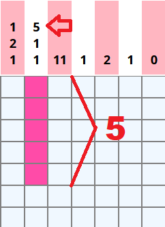
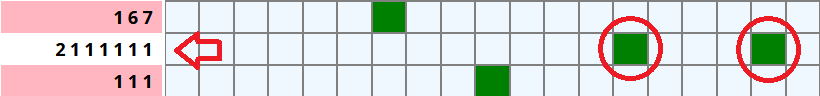
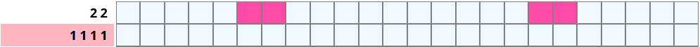
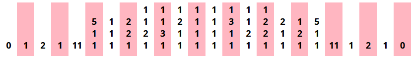
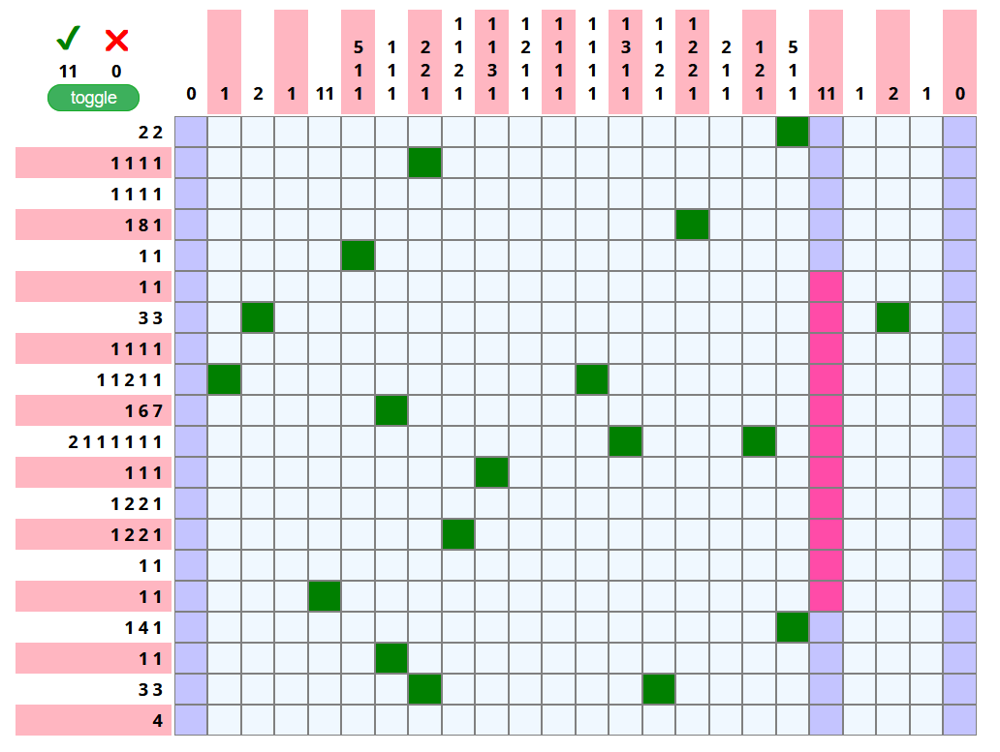

Basics
To solve this puzzle you need to fill in the dots marked with numbers at the top and left side of the table. The numbers indicate how many dots you need to fill in both the row and the column. To know where to fill the dots, match up the row and column. Once the puzzle is solved, the filled dots become the picture.
Sometimes there is more that 1 number, it means that there are 1 or more unfilled dots between few dots that is have filled one by one.
Another example.
Hints
I made some hints to make this game less time consuming. So there are few marks that show, what dots is to be filled. I hope it will help to not get lost, and leave less space for assumption.
Dot counter
Also I implemented the counter, that shows how much correct and incorrect dots are filled, so it is possible to know when exactly incorrect dot is filled, to not to start over from the beginning. Puzzle is solved when there is 101 correct dots, and 0 incorrect dots.

Symmetry
If you look at the upper part of the table, where numbers in columns are marked, you can notice that they are almost same on the right and left from the center. It means, that image in the puzzle is almost symmetrical and dots that are filled on one side are most of the times will be filled on the other side. It leaves on only half of the puzzle to be solved. (In this particular nonogram!).
Right click mark
It is possible to mark dots that is figured out to not to be filled with color. Marking empty dots is important part of solving nonograms, it will help to see what to do in uncertain areas.
